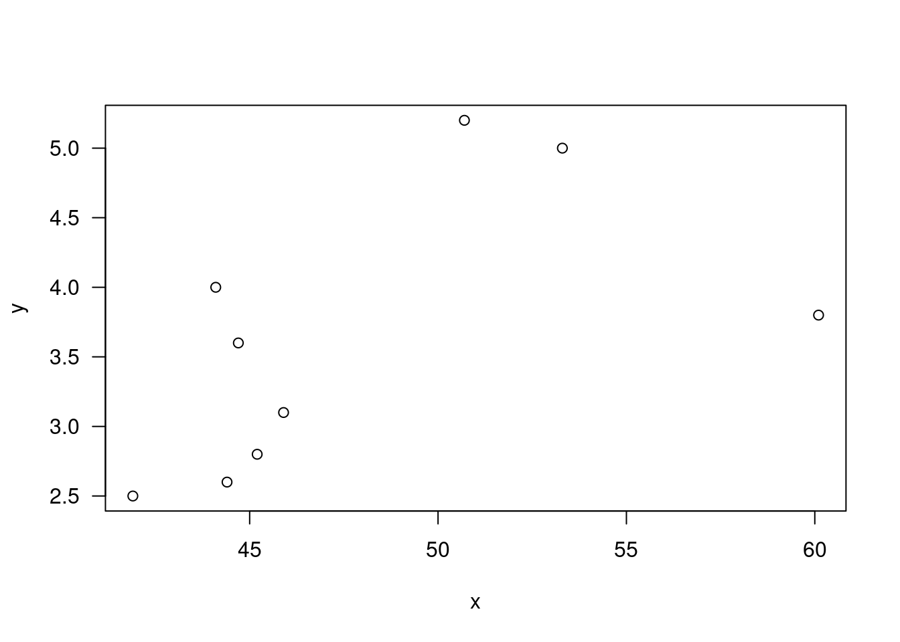
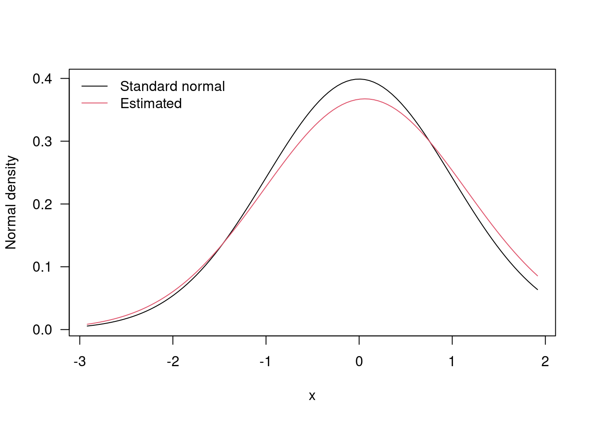

4 Sign test and Wilcoxon signed rank
\[\begin{equation} \text{Paired data} (X_i, Y_i), i = 1...,n\\ (X_i, Y_i) \text{independent of} (X_j, Y_j), i \ne j \\ X_i \sim (\mu_x, \sigma_x^2), Y_i \sim (\mu_x, \sigma_y^2)\\ Cov(X_i, Y_i) = \sigma_{xy} = \rho\sigma_x\sigma_y \\ D_i = X_i -Y_i \sim N(\delta = \mu_x - \mu_y, \sigma_x^2 + \sigma_y^2 -2\rho\sigma_x\sigma_y) \\ D_i = \bar{X} - \bar{Y} \sim N(\delta, \frac{1}{n}(\sigma_x^2 + \sigma_y^2 - 2\rho\sigma_x\sigma_y)) \\ \end{equation}\]
n=30; x=rnorm(n,mean=1,sd=1); y=rnorm(n,mean=1.1,sd=1);
t.test(x,y,paired=T)##
## Paired t-test
##
## data: x and y
## t = 0.45145, df = 29, p-value = 0.655
## alternative hypothesis: true difference in means is not equal to 0
## 95 percent confidence interval:
## -0.3924828 0.6148275
## sample estimates:
## mean of the differences
## 0.1111723t.test(x-y)##
## One Sample t-test
##
## data: x - y
## t = 0.45145, df = 29, p-value = 0.655
## alternative hypothesis: true mean is not equal to 0
## 95 percent confidence interval:
## -0.3924828 0.6148275
## sample estimates:
## mean of x
## 0.11117234.1 Sign test and Wilcoxon signed rank test
Nonparametric version of the paired or one sample t. test. Primary interest is centered on the location (median) of the population. Two scenarios: pared data, such as pretreatment and posttreatment where we are looking at shift in location due to treatment, or one sample data, where obserbations from a single population about whose location we wish to make inferences.
Assumptions:
- Let \(Z_i = Y_i - X_i, i =1,...,n\) The differences \(Z_i,...Z_n\) are mutually independent. \(X_i\) and \(Y_i\) can be dependent
- Each \(Z_i\) comes from a continuous population (not necessarily the same one) and has a common median \(\theta\)
- \(P(Z_i \le \theta) = P(Z_i > \theta) = 1/2\)
- \(P(Z_i - \theta \le 0) = P(Z_i -0 > 0) = 1/2\)
- \(\theta\) is the treatment effect
Under \(H_0\): * Each of the distributions for the differences has median 0, corresponding to no shift in location due to the treatment. * Sign statistic is the number of positive \(Z_i\)’s… * \(T = \sum_{i=1}^{n}l_{{z_{i}>0}}\) * random variable \(l_{{z_{i}>0}}\) follows a Bernoulli distribution with \(p = \frac{1}{2}\) * T follows a binomial(n,1/2) distribution
4.2 Example
library(BSDA)## Loading required package: lattice##
## Attaching package: 'BSDA'## The following object is masked from 'package:datasets':
##
## Orangex=c(1.83,0.50,1.62,2.48,1.68,1.88,1.55,3.06,1.30);
y=c(0.878,0.647,0.598,2.05,1.06,1.29,1.06,3.14,1.29);
plot(x,y,las=1); abline(0,1);
z=x-y; z; sign(z) ; stat=sum(x>y);## [1] 0.952 -0.147 1.022 0.430 0.620 0.590 0.490 -0.080 0.010## [1] 1 -1 1 1 1 1 1 -1 1stat; median(z);## [1] 7## [1] 0.492*pbinom(stat-1,length(z),1/2,lower.tail=F)## [1] 0.17968752*pbinom(stat-1,length(z),1/2,lower.tail=F)## [1] 0.1796875SIGN.test(z);##
## One-sample Sign-Test
##
## data: z
## s = 7, p-value = 0.1797
## alternative hypothesis: true median is not equal to 0
## 95 percent confidence interval:
## -0.0730000 0.9261778
## sample estimates:
## median of x
## 0.49
##
## Achieved and Interpolated Confidence Intervals:
##
## Conf.Level L.E.pt U.E.pt
## Lower Achieved CI 0.8203 0.010 0.6200
## Interpolated CI 0.9500 -0.073 0.9262
## Upper Achieved CI 0.9609 -0.080 0.9520- When \(\theta = 0\), the distribution of the statistic T is symmetric about its mean \(n/2\)
- A natural estimator of \(\theta\) is the amount that \(\hat\theta\) should be subtracted from each \(Z_i\) so that the value of Y, when applied to the shifted sample \(Z_i - \hat\theta, ..., Z_n = \hat\theta\) is as close to n/2 as possible
- We estimate \(\theta\) by the amount \(\hat\theta\) that the Z sample should be shifted in order that \(Z_i - \hat\theta, ..., Z_n = \hat\theta\) appears as a sample from a population with median 0
z-median(z)## [1] 0.462 -0.637 0.532 -0.060 0.130 0.100 0.000 -0.570 -0.480median(z-median(z))## [1] 04.3 Large sample test
4.4 Wilcoxon signed rank test
n=10; rn=(n*(n+1)/2); tv=0:rn;
plot(tv,dsignrank(tv,n),type="h",ylab="",main=paste("n=",n),las=1);
x0=11;
psignrank(x0,n);## [1] 0.052734381-psignrank(rn-x0-1,n);## [1] 0.05273438psignrank(rn-x0-1,n,lower.tail=F);## [1] 0.052734384.5 Example
rbind(z, rank(z)); n=length(z)## [,1] [,2] [,3] [,4] [,5] [,6] [,7] [,8] [,9]
## z 0.952 -0.147 1.022 0.43 0.62 0.59 0.49 -0.08 0.01
## 8.000 1.000 9.000 4.00 7.00 6.00 5.00 2.00 3.00Tplusv=sign(z)*rank(abs(z));
tplus=sum(Tplusv[Tplusv>0]); tplus## [1] 40psignrank(tplus-1,n,lower.tail=F)## [1] 0.01953125wilcox.test(x, y, paired = T, alternative = "greater",conf.int=T);##
## Wilcoxon signed rank exact test
##
## data: x and y
## V = 40, p-value = 0.01953
## alternative hypothesis: true location shift is greater than 0
## 95 percent confidence interval:
## 0.175 Inf
## sample estimates:
## (pseudo)median
## 0.46zz=outer(z,z,"+"); lzz=zz[lower.tri(zz,diag=T)]; median(lzz)/2## [1] 0.46median(z-0.46)## [1] 0.03wilcox.test(z, alternative = "greater",conf.int=T)##
## Wilcoxon signed rank exact test
##
## data: z
## V = 40, p-value = 0.01953
## alternative hypothesis: true location is greater than 0
## 95 percent confidence interval:
## 0.175 Inf
## sample estimates:
## (pseudo)median
## 0.464.6 Large sample approximation
wilcox.test(z, alternative = "greater", conf.int=T,
exact = FALSE, correct = F) ;##
## Wilcoxon signed rank test
##
## data: z
## V = 40, p-value = 0.01908
## alternative hypothesis: true location is greater than 0
## 95 percent confidence interval:
## 0.1750369 Inf
## sample estimates:
## (pseudo)median
## 0.4600024